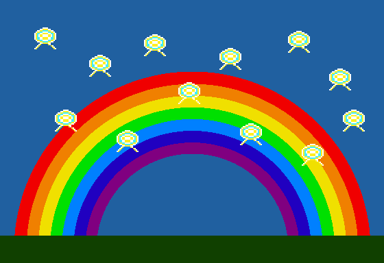

veratest.po
140 KiB · floppySeven demos behind one menu: sprites, a PSG + FM chiptune, the Mode 7 rainbow, a Mode 4 tilemap, dual-layer parallax, the Matrix rain and Sonic’s Green Hill Zone.
A2VERA · Apple //e · pure 6502
A 7-in-1 test suite on a 140 KiB floppy and a 32 MiB slideshow with 375 fullscreen Mode 7 images, PSG chiptune and YM2151 FM — written in pure 6502 and streaming straight from ProDOS. Both boot here, in your browser.
Opens Apple2TS in a new tab with the disk streamed from this repository — no download, VERA already in slot 2, and the “VERA Monitor” tab showing the 640×480 output. On a machine without an FM chip the sound falls back to PSG automatically.

The two images
Both are bootable ProDOS 2.4.3 volumes with Slot 2 and Slot 4 binaries, a BASIC launcher that probes the card, and no fixed block numbers — they run from the image, or from a directory on your own ProDOS disk.
Seven demos behind one menu: sprites, a PSG + FM chiptune, the Mode 7 rainbow, a Mode 4 tilemap, dual-layer parallax, the Matrix rain and Sonic’s Green Hill Zone.
375 Mode 7 images with 375 custom palettes, read block by block through ProDOS and pushed into VERA VRAM. Three X16 soundtracks play as PSG + FM while the images stream.
veratest.po · menu 1–7
Every demo is its own 6502 binary, launched from the menu with the VERA base that matches the slot the probe found.
4bpp crystal aliens on 16 hardware sprites, 2× scaling, bouncing off the screen border.
Four PSG voices — pulse lead, saw harmony, triangle bass, noise drums — with YM2151 kick and snare when the FM chip answers.
A fullscreen 256-colour 320×240 bitmap decompressed from an RLE stream in under a millisecond.
8×8 8bpp tiles, a centred castle landscape and a slowly wandering horizontal camera.
Layer 0 starfield under Layer 1 plasma waves, scrolling at different depths like a 3D scene.
256-colour text mode with multi-speed palette cycling and live katakana glitch mutations.
Dual-layer port with 4-frame sprites, water palette cycling, sunflower tile swaps and the original arrangement as PSG + FM.
slideshow.hdv · 375 images
There is no 76,800-byte bitmap in Apple II RAM. The engine resolves each image’s ProDOS allocation, then reads those blocks straight into VERA while the music keeps running from the VSYNC interrupt.
Under the hood
No patched emulator features, no host acceleration: the same binaries run on a real Apple IIe with a VERA card.
The slideshow finds each IMGnnn.BIN and VPALnnn.BIN through its catalog
entry, reads the seedling/sapling index, and issues MLI READ_BLOCK on the allocated
blocks directly into VERA. Cadius allocates them dynamically, so nothing assumes contiguous data.
The X16 soundtracks are converted into VZM records: PSG writes, batched YM2151 register pairs and delays. Every tick was replayed against the raw ZSM — 31,147 ticks, zero mismatches.
A bounded BUSY probe detects the OPM at $C0A0/$C0A1 or $C0C0/$C0C1. One
master volume scales the 16 PSG levels from a shadow table and rewrites all 32 FM total levels,
matched to the same amplitude law.
Two 512-byte tick buffers are prefetched from the IRQ midpoint, so block boundaries switch buffers and keep decoding the same tick. A short read past EOF ends the track normally instead of muting.
Build it
The 6502 assembler, the Applesoft compiler and the disk packagers are all in this repository.
REM needs Node.js; Cadius is bundled in tools/ git clone https://github.com/anomixer/veratest cd veratest build.bat all REM veratest.po + slideshow.hdv + previews node src/verify_music_streams.mjs REM replay all 31,147 music ticks
build.bat veratest or build.bat slideshow builds a single target.CADIUS to use a different Cadius executable.